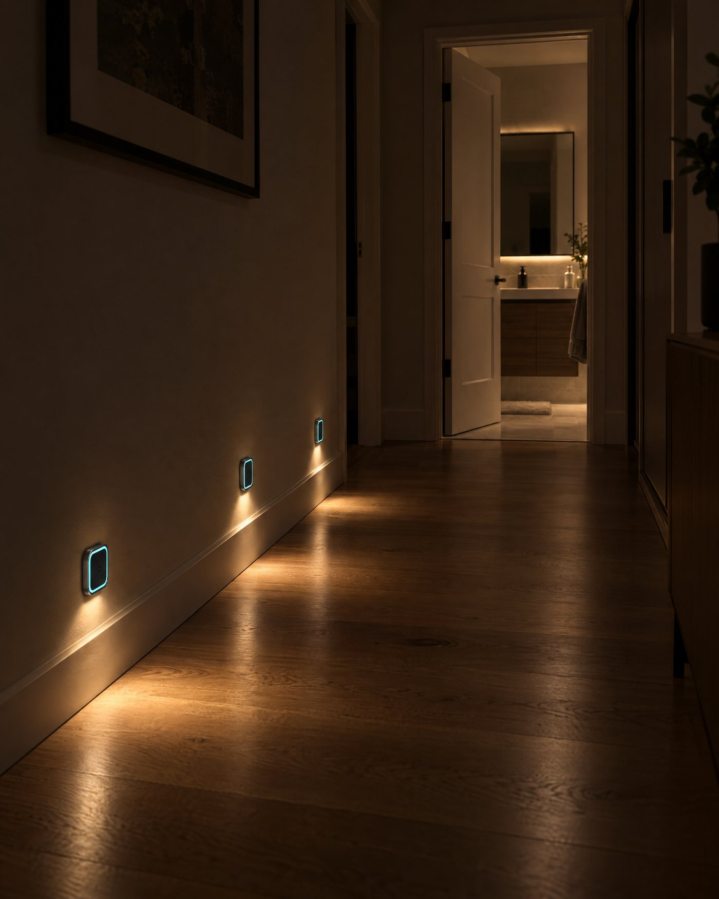

A fall at 2 am
It knows the minute it happens, not at nine when someone calls in.


It knows the minute it happens, not at nine when someone calls in.
Resting heart rate and breathing, read from across the room. No strap, no patch, no watch to charge.
Time is the signal. It counts the minutes so nobody has to knock.
Sleep, restlessness and trips out of bed. A slow change over weeks is often the first sign.
Too hot, too cold, too stuffy. Comfort is health.